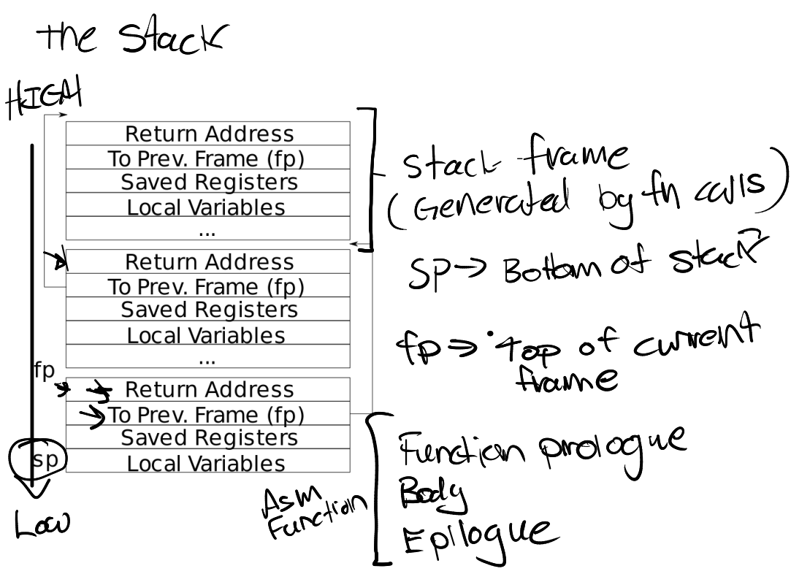

现在是，陷入内核时间。
Preparation
切换到对应分支
1 | $ git fetch |
Task1: RISC-V assembly
第一个任务就是了解一下 RISC-V 汇编语言，直接跳过。
反正 Hello World 就完事了(
Task2: Backtrace
该任务要求我们实现 backtrace()
特性，打印函数调用层次，方便 debug。
课程笔记中已经为我们展示了栈中各个栈帧(Stack Frame)的排布情况，如下图所示。

每当一个函数被调用，就会在栈中为其分配一个栈帧，先 push
函数返回地址，再 push 上一个栈帧的地址。如果用 fp
指向当前栈帧，则有 return_addr = *(fp-8)，以及
prev_fp = *(fp-16)。可以近似看成一个链表。那么如何判断一个栈帧是否位于调用层次结构的根呢？在
xv6 中，一个栈就是一个 PGSIZE
大小，由于栈从高往低增长，那么最开始那个栈帧必然大于该页的最大地址（事实上就是下一页的起始地址）。
有了这些知识，那么实现起来就很简单了，只需在一个有限循环里遍历栈帧即可。
1 | void |
Task3: Alarm
该任务要求我们实现定时器功能，即给定 interval 和一个 handler，每
interval 次时钟中断，调用一次 handler()。
lab 手册已经给我们提供了 sigalarm() 和
sigreturn()
函数签名，我们要做的就是实现对应的系统调用。注册过程略掉，我们先看看
sys_sigalarm() 要做什么。
sys_sigalarm
sys_sigalarm() 接收两个参数 interval 和
handler，并将其保存到当前进程，这样每次时钟中断时，我们检查距离上次调用
handler 的时间，如果到了 interval 个 ticks，就进行调用。
但不能直接进行 p->handler() 这样的指令，因为 handler
是个用户态函数指针，保存的是用户态的虚拟地址，而处理时钟中断时位于内核态。为了正确调用，我们可以令
p->trapframe->epc = p->handler，这样在
usertrapret() 时，该值会被写入
SEPC，那么我们返回用户态时就可以直接跳到这个指令。而由于 handler
内部调用了 sigreturn()，会返回时钟中断之前的代码位置 （记为
origin）。
总结一下就是，代码运行到 origin
时触发时钟中断，进入内核态处理，再进入用户态调用
handler，完了之后触发系统调用 sigreturn()
再一次进入内核态进行处理，最后回到 origin。
这就要求我们保存代码处于 origin 时的上下文，否则触发
sigreturn() 时当前进程的 trapframe 内容可能会被 handler
的数据占据，导致之前的数据丢失，再也回不去了。比较典型的就是 PC，还有
SP。
如果不知道哪些要保存，那就干脆点直接把整个 trapframe
进行一个拷贝，也就要在 struct proc 里新增一个
trapframe_copy 变量用于拷贝 origin
进入内核态时暂存的用户寄存器。
1 | struct proc { |
test2 中要求我们在执行 handler 时忽视时钟中断，就还要一个
in_handler 变量用来指示当前是否正在调用 handler。
这样一来，sys_sigalarm()
函数就很好实现了——仅仅是保存一些变量而已。
1 | uint64 |
以及别忘了需要在 allocproc() 和 freeproc()
中进行一些修改。
when and how to call handler?
上文说到，需要在每次时钟中断时检查 ticks。而时钟中断的处理位于
kernel/trap.c 的 usertrap()
函数中，即函数末尾的 if (which_dev==2)
分支。这个判断条件为真，意味着当前处理的是时钟中断。
那么如果 p->timeout
非零，意味着定时器有效（p->handler
为零不能作为是否有效的依据，因为传入的函数地址可能在虚拟空间的最开始，也就是地址为
0x0）。
如果当前未运行 handler，将 tick 增加，一旦达到阈值 timeout，就将
trapframe 进行拷贝，然后修改 trapframe 的 epc 字段，等待
usertrapret() 结束后跳转到 handler 并执行。
1 | void |
sys_sigreturn
定时器返回函数就更简单了。恢复原来的 trapframe 数据，这样对硬件而言，中间发生的事都无所谓，毕竟从 origin 触发时钟中断，到 sigreturn 返回，trapframe 都没有变，那也就能进行正确的恢复。
由此可见 trapframe 在恢复用户态的重要性。
1 | uint64 |
测试结果
1 | $ make grade |
最后的工作
git commit -am ""将所有修改提交到本地;- 执行
make handin。由于 lab0 保存了 APIKey，故直接成功提交；
可选的挑战再说吧，没有什么想做的欲望。